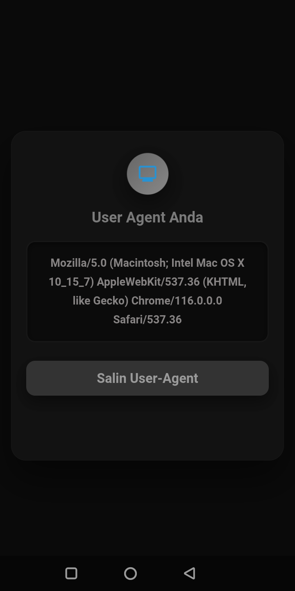
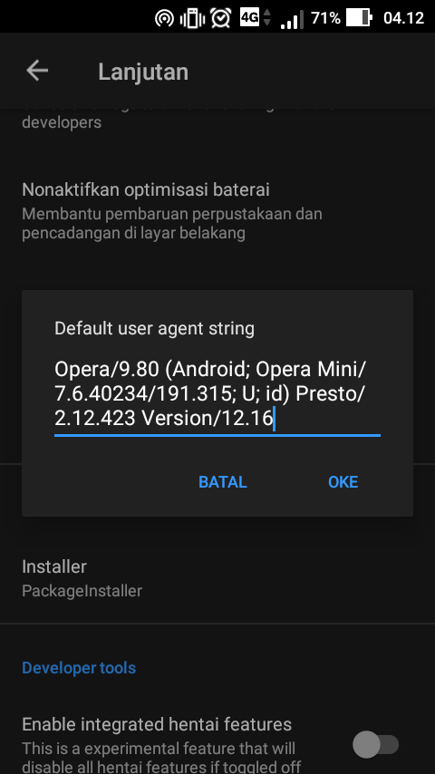
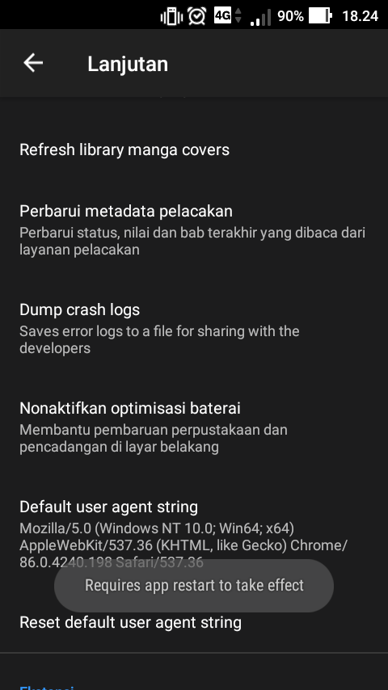
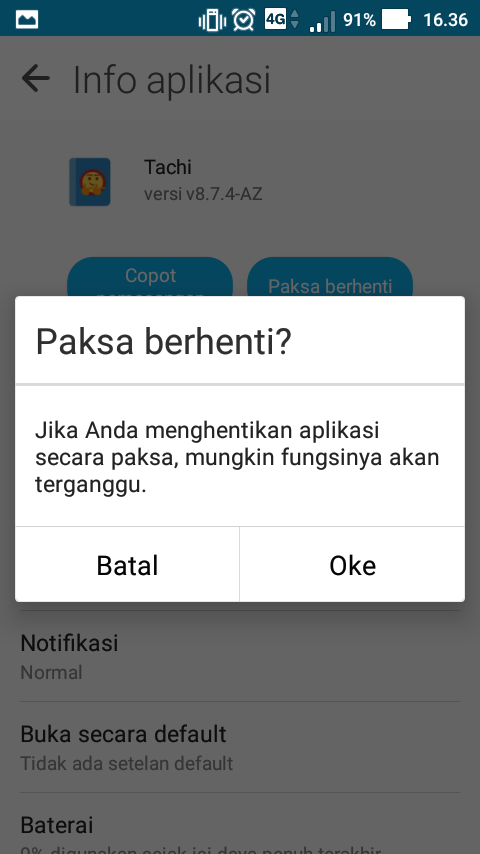
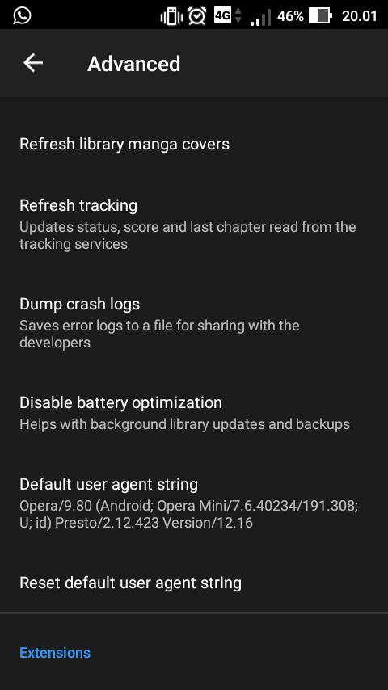

Ganti User-Agent Di Tachiyomi
1. Buka Deteksi String, Disarankan buka pakai Chrome
2. Setelah terbuka, klik tombol Salin

3. Jika sudah disalin, buka tachiyomi dan pergi ke: Pengaturan --> Lanjutan/Advanced --> Default User Agent String/Agen Pengguna, lalu ganti string yang ada dengan string yang baru saja disalin dan klik ok

4. Lihat gambar dibawah, ada notif yang artinya kurang lebih "Mulai ulang aplikasi untuk mengetahui efeknya"

5. Mulai ulang aplikasi dengan cara keluar dari aplikasi Tachiyomi atau Paksa Berhenti juga boleh seperti gambar dibawah kalau keluar seperti biasa gak ngefek

6. Buka lagi apk Tachiyomi dan lakukan seperti point nomor 3. Jika seperti gambar di bawah, itu menandakan User-Agent sudah berhasil diterapkan
